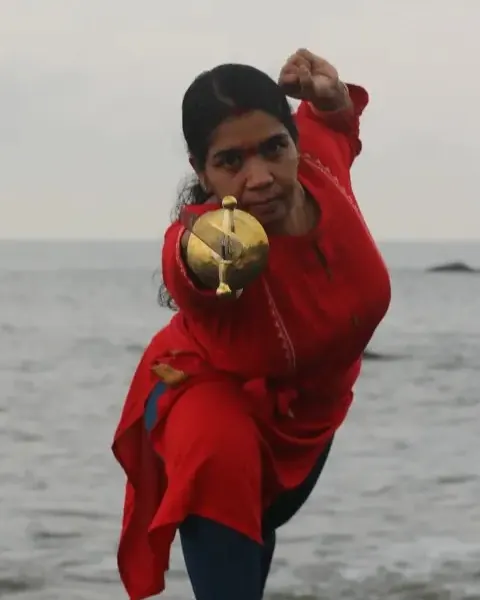

Our masters
The Gurukkals of the Sangham
Teachers who carry the lineage of Veerasree Sami Gurukkal in the Kalari, in healing and on stage.

Founder, 1934 to 2006
Veerasree Sami Gurukkal
Initiated into Kalaripayattu at seven, he went on to learn Ayurveda and the Tantra shastras and remained a student all his life. He founded Hindustan Kalari Sangham in 1952 and treated patients who came from across India. His remembrance, Gurusmriti, is observed every May.
Teaching today
-
Lakshmanan Gurukkal
AcharyaFounded Kalarigram near Auroville in 2010 and leads the work on the Guru Veera Sri Sami Gurukkal Ayurveda Gurukulam in Calicut.
-
Shatrughnan Gurukkal
GurukkalLeads training and Marma Chikitsa at the Sangham, and teaches visiting students from abroad.
-

Radhika Gurukkal
GurukkalA senior teacher known for her performances with the Urumi, the flexible sword, who also teaches internationally.
-
Amrutha Revathi
InstructorTeaches the Sangham's online Kalaripayattu classes.